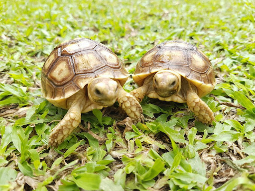
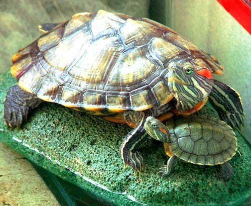
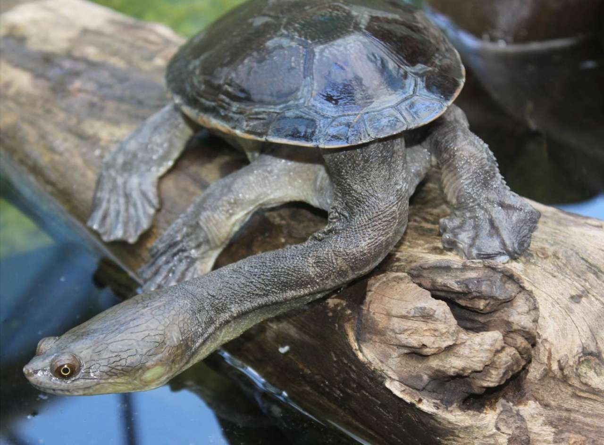

เต่าซูคาต้า (Sulcata Tortoise)

จัดเป็นเต่าบกที่มีความใหญ่เป็นอันดับ 3 ของโลกรองมาจาก เต่ายักษ์กาลาปากอสและเต่ายักษ์อัลดาบรา จัดเป็นเต่าที่มีลักษณะกระดองที่แบนราบ เมื่อยังอยู่ในวัยเล็กลำตัวมีสีขาวไปจนถึงสีน้ำตาลเหลือง เมื่อเข้าสู่วัยรุ่นและวัยเต็มวัยสีของกระดองจะพัฒนาเป็นสีน้ำตาลและสีเหลือง ขาทั้งสี่ข้างแข็งแรง โดยเฉพาะขาคู่หน้ามีเกล็ดขนาดใหญ่เห็นได้ชัดเจน
กระจายพันธุ์บริเวณพื้นที่แห้งแล้ง บริเวณขอบทะเลทรายซาฮาราตั้งแต่มาลี และเซเนกัล ในแอฟริกาตะวันตกไปจนถึงเอธิโอเปียในแอฟริกาตะวันออก
ขนาดเมื่อโตเต็มที่ยาวได้มากกว่า 33 นิ้ว น้ำหนักกว่า 105 กิโลกรัม มีอายุยาวกว่า 100 ปีเป็นเต่าที่กินอาหารหลักได้หลากหลาย โดยมากเป็นหญ้า รวมถึงวัชพืชและผลไม้ชนิดต่าง ๆ รวมถึงพืชในทะเลทราย เช่น กระบองเพชร
ปัจจุบัน เต่าซูลคาตาเป็นเต่าบกอีกชนิดหนึ่ง ที่นิยมเลี้ยงกันเป็นสัตว์เลี้ยง และสามารถเพาะขยายพันธุ์ในที่เลี้ยงได้แล้ว
เต่าญี่ปุ่นหรือเต่าแก้มแดง (Red-eared slider)

เป็นเต่าน้ำจืดชนิดหนึ่ง มีถิ่นกำเนิดอยู่ที่ทวีปอเมริกาเหนือ มีถิ่นกำเนิดดั้งเดิมอยู่ในพื้นที่ชุ่มน้ำแถบรัฐอิลลินอยส์, แม่น้ำมิสซิสซิปปี ไปจนถึงอ่าวเม็กซิโก เหตุที่ได้ชื่อว่า เต่าญี่ปุ่นเพราะว่าในประเทศไทย พ่อค้าชาวญี่ปุ่นเป็นบุคคลแรกที่นำเต่าชนิดนี้มาขาย จึงทำให้ได้ชื่อว่า เต่าญี่ปุ่น
ลักษณะเมื่อแรกเกิด กระดองจะเป็นสีเขียว เมื่อโตขึ้นจะเปลี่ยนไปเป็นสีคล้ำ เท้าทั้ง 4 ข้างมีพังผืดใช้ว่ายน้ำได้ดี มีจุดเด่นคือ รอบ ๆ ดวงตามีสีแดง จึงทำให้ได้ชื่อว่า เต่าแก้มแดง ขนาดเมื่อโตเต็มที่ประมาณ 1 ฟุต โดยที่ตัวผู้จะมีขนาดเล็กกว่าตัวเมียเล็กน้อย กินอาหารได้ทั้งพืชและสัตว์
อายุขัยโดยเฉลี่ย 30 ปี ในประเทศไทยมีการเลี้ยงกันมานานกว่า 30 ปี ได้รับความนิยมอย่างยิ่งเนื่องจากความน่ารักในเต่าขนาดเล็กประกอบกับมีราคาถูก
เต่าคองู (Snake-necked turtle)

พบกระจายพันธุ์บนเกาะปาปัวนิวกินีแถบทางใต้ของเกาะบริเวณช่องแคบทอเรส และตามหนองบึงทั่วไปของออสเตรเลีย เต่าคองูมีอายุขัยโดยเฉลี่ย 17-50 ปี
มีลักษณะเด่น คือ มีส่วนคอที่ยาวมากเหมือนงู หัวมีขนาดเล็ก ตากลมโต ขนาดโตเต็มที่กระดองยาว 30 เซนติเมตร อาศัยในน้ำตื้น ๆ หรือชายน้ำ จะไม่อยู่ห่างน้ำไปไกลเพราะคอที่ยาวจะทำให้การเคลื่อนไหวบนบกทำได้ไม่คล่องตัว ชอบความสะอาด มักจะหมอบราบกับพื้นท้องน้ำ และฝังตัวอยู่ในโคลนที่อ่อนนุ่ม กินอาหารจำพวกปลาหรือสัตว์น้ำชนิดต่าง ๆ ด้วยการดูดเข้าไปในปาก
เต่าอัลลิเกเตอร์ (Alligator snapping turtle)

เต่าอัลลิเกเตอร์ มีส่วนหัวใหญ่ตัน ขากรรไกรรูปร่างเหมือนจะงอยปากและกระดองยาวหนามีสัน 3 สันแลดูคล้ายหลังของอัลลิเกเตอร์ อันเป็นที่มาของชื่อ
ตัวผู้มีขนาดใหญ่กว่าตัวเมีย โดยตัวผู้นั้นนั้นมีความยาวกระดอง 66 เซนติเมตร และมีน้ำหนักได้ถึง 80 กิโลกรัม ส่วนตัวเมียมีน้ำหนัก 23 กิโลกรัม
เต่าอัลลิเกเตอร์ จัดเป็นเต่าน้ำจืดที่มีขนาดใหญ่ที่สุดในโลก มีแรงกัดของกรามที่รุนแรงกระจายพันธุ์ในแหล่งน้ำจืดของหลายพื้นที่ในภาคตะวันออกและภาคใต้ของสหรัฐอเมริกา กินเนื้อเป็นอาหาร กินปลาและสัตว์น้ำต่าง ๆ เป็นอาหาร
เต่าอัลลิเกเตอร์ นิยมเลี้ยงเป็นสัตว์เลี้ยง และจัดแสดงตามสวนสัตว์